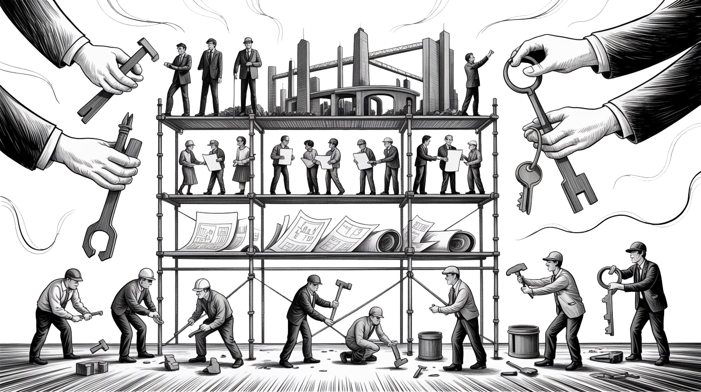
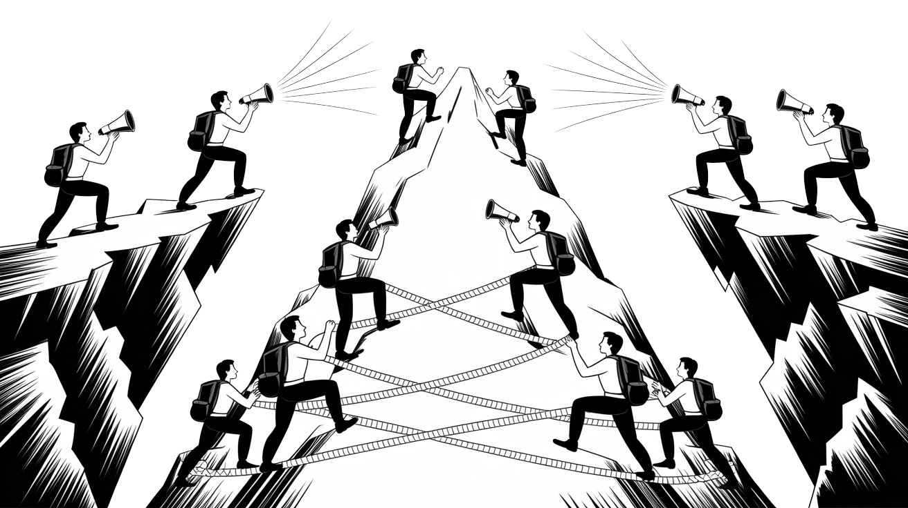

Building Without Blueprints
In a world obsessed with "just fix it," here's the uncomfortable reality: Companies won't act ethically, governments won't regulate properly, and your reusable straw won't save the planet. Real change isn't about blueprints—it's about power. Build it or keep pretending.


Everyone has a plan, until they get punched in the mouth."
— According to Mike Tyson, who understood power dynamics better than most technology consultants in tech strategy sessions by people who've never faced meaningful opposition


The Token Wisdom Rollup ✨ 2025
One essay every week. 52 weeks. So many opinions 🧐

What Comes After Critique
When You Don't Have the Power to Implement Solutions
The post-anthology reckoning: or, why "here's what we should do" is usually bullshit...
I’ve spent the better part of three years diagnosing technological systems. Every week, an essay, a newsletter, and more unanswered questions. Week 51 diagnosed the diagnostic framework itself. You read "The Amnesia Machine" and watched me dissect how Silicon Valley keeps selling the same broken promises in new packaging.
The Problem With Solutions
And now you're expecting the part where I tell you what to do about it.
Here's the uncomfortable truth: I don't have a fucking blueprint.
Not because I haven't thought about it. Not because I don't care. But because proposing "solutions" to problems created by massive power imbalances—while pretending those power imbalances don't exist—is intellectual masturbation at best and active harm at worst.
Every technology thinkpiece ends the same way:
"And therefore, companies should [do the ethical thing], governments should [regulate appropriately], and individuals should [make better choices]."
Cool. Cool cool cool.
Companies won't do the ethical thing because they're structurally incentivized to do the profitable thing.
Governments won't regulate appropriately because they're either captured by the industries they're supposed to regulate, or they're so far behind technologically they're regulating yesterday's problems with yesterday's frameworks.
And individuals can't "make better choices" when the systems are designed specifically to make ethical choices more expensive, more inconvenient, and more socially isolating than the default option.
So what's the point of this essay?
Not to give you a neat solution you can implement tomorrow. That would be dishonest.
Instead, I'm going to do something harder: map the actual terrain we're operating in, identify where leverage points might exist, acknowledge the constraints we're under, and be honest about what's actually required to change any of this.
No false hope. No premature solutions. Just clear-eyed analysis of what comes after diagnosis.
Because the alternative—writing another "here's how tech companies should be more ethical" piece that nobody with power will read and nobody without power can implement—is a waste of everyone's bloody time.
Act I: Why "Solutions" Usually Fail
Let me tell you about every tech ethics initiative I've watched collapse:

The Ethics Board Theater
The Pattern:
- Company builds concerning technology (facial recognition, targeted advertising, predictive policing)
- Public outcry / bad press
- Company announces "AI Ethics Board" with impressive academics
- Board writes "Principles for Responsible Development"
- Principles get cited in every press release
- Technology deploys exactly as originally planned
- Board members quietly resign 18 months later
- Nobody notices because we're covering the next company's ethics board
Why it failed: The board had no actual power. They were advisory. They could write principles. They could raise concerns. But when those concerns conflicted with the company's business model—which they always did—the company won.
The lesson: Ethics washing works because it lets companies appear responsible while changing nothing structural about how they operate.
The "Just Regulate It" Fallacy
The Pattern:
- Technology causes obvious harm (algorithmic discrimination, privacy violations, labor displacement)
- Activists call for regulation
- Tech companies hire armies of lobbyists
- Years pass
- Watered-down regulation finally passes
- By the time it's implemented, the technology has evolved three generations
- Regulation applies to the old thing nobody uses anymore
- The new thing continues unregulated
Why it failed: Regulation is reactive. Technology is proactive. By the time democratic processes mobilize to address a problem, the industry has already moved on to the next version that exploits a different loophole.
Also, regulatory capture. The people who understand the technology well enough to regulate it are usually the people who built it, and they're not interested in constraining their own industry.
The lesson: Asking government to regulate fast-moving technology is like asking your grandmother to referee a cage match. Theoretically possible, realistically futile.
The Individual Choice Delusion
The Pattern:
- Technology has obvious negative externalities (privacy invasion, attention manipulation, environmental cost)
- Think pieces emerge: "Here's how to protect your privacy online!"
- Tips include: use VPN, read terms of service, install privacy extensions, opt out of data collection, use encrypted messaging, disable tracking cookies, etc.
- Exactly three people follow all the steps
- Those three people now can't use 90% of the internet
- Everyone else continues as before because friction is too high
- Companies continue surveillance capitalism business model
Why it failed:
Individual choice works when:
- The ethical option is reasonably convenient
- Network effects don’t punish non-participation
- Information asymmetry is low enough that people can make informed decisions
- The individual actually has meaningful alternatives
None of these conditions apply to most technology systems.
The lesson: Putting the burden of systemic change on individual consumer choices is asking people to solve structural problems with personal virtue. It doesn't work. It's never worked. Stop pretending it will.
Act II: What Actually Changes Systems
(And Why It's Hard)
Having dissected the failures, let's turn to what history actually teaches us about creating change:

1. Power Redistribution (Not Asking Nicely)
What worked in history: Labor unions didn't get weekends and 40-hour work weeks by politely asking. They organized, they struck, they disrupted production until conceding to their demands was less expensive than continuing to fight.
Civil rights movements didn't win by writing principled statements about equality. They made the status quo untenable through organized mass action.
Environmental regulations didn't happen because corporations suddenly cared about the planet. They happened because activists made pollution expensive—legally, reputationally, economically.
What this means for tech is that change happens when:
- Tech workers organize and threaten to stop building the harmful systems
- Users organize boycotts that actually impact revenue
- Whistleblowers make internal practices too embarrassing to continue
- Legal liability becomes more expensive than changing behavior
- Alternative systems gain enough traction to threaten market position
None of this is easy. None of it is quick. All of it requires building actual power, not writing position papers.
2. Infrastructure Alternatives (Build What You Want to See)
The pattern that works: When email was controlled by AOL and CompuServe, open protocols (SMTP, POP, IMAP) created alternatives that eventually undermined corporate control.
When Microsoft dominated operating systems, Linux proved that community-developed alternatives could not only survive but thrive.
When corporate social media became surveillance capitalism, decentralized protocols (Mastodon, Matrix, ActivityPub) showed that other models are technically feasible.
The pattern that doesn't: Building a "better" version of an existing platform that still depends on:
- Venture capital funding (which demands exponential growth and eventual extraction)
- Proprietary protocols (which reproduce network effect lock-in)
- Advertising business models (which inevitably lead back to surveillance)
- Centralized control (which concentrates power again)
What this means is real alternatives require:
- Different funding models (cooperatives, public funding, community support)
- Open protocols (preventing single-provider lock-in)
The hard part: These alternatives start small, grow slowly, and require users to sacrifice convenience for principle. Most people won't do that until the mainstream option becomes intolerable.
3. Catastrophic Failure (The Accelerationist Approach)
There's another path to change that few discuss openly, but history reveals:
Systems often require catastrophic failure to change:
- Facebook: No serious regulation until Cambridge Analytica
- Theranos: No collapse until deaths occurred
- Finance: No regulation until 2008's crash forced action
The accelerationist argument:
Maybe the fastest path to change is to let the systems fail spectacularly. Stop trying to reform them. Stop trying to make them slightly less harmful. Let them run to their logical conclusion until the contradictions become undeniable.
Why I'm not advocating this: Because the people who pay the price for catastrophic failure are never the people who built the systems. It's not Mark Zuckerberg who suffers when Facebook's algorithm radicalizes communities. It's not Sam Altman who pays when AI systems make discriminatory decisions. It's marginalized communities, workers, and people without power.
But I am acknowledging this: We might not get a choice. The systems might fail catastrophically whether we want them to or not. And maybe our job isn't to prevent that failure—maybe it's to build the alternatives now so there's something to fall back on when the collapse comes.
Act III: The Multi-Level Work
(What's Actually Required)
Since I refuse to give you a neat solution, here's the messy reality of what's required to change anything:

Level 1: Immediate Individual Practice
What You Can Do Right Now
For Technologists: Stop building systems that extract value from uncompensated labor. Yes, this means refusing work. Yes, this means lost income. Either take the ethical stand or abandon the pretense of caring.
Include affected communities in design processes as co-designers with veto power, not as "users" you occasionally survey. If you can't do that, you're building for yourself and calling it innovation.
Document environmental costs in technical specifications. Measure and report each feature's carbon footprint. Let sustainability constrain technical choices. Document whose labor enables your system. The people labeling your training data. The people moderating your content. The people mining the minerals in your hardware. Make them visible or admit you're erasing them for convenience.
For Analysts/Writers: Make labor visible in every technical analysis. Not as an afterthought. Not as a final paragraph. As a central, unavoidable part of the analysis.
Include gender and race dynamics as default, not "special interest." If you're analyzing AI bias, facial recognition, or hiring algorithms without centering the communities most impacted, you're writing incomplete analysis and calling it objective.
Center climate costs as fundamental constraint, not peripheral concern. Data centers consume electricity. Training models has carbon costs. Manufacturing devices requires resource extraction. These aren't externalities—they're core to the analysis.
Seek out non-Western technological approaches as legitimate alternatives, not exotic curiosities. Indigenous knowledge systems, African mobile money, Latin American mesh networks—these aren't side notes, they're different ways of solving the same problems.
For Organizations: Diversify engineering teams—but not as PR. Because different perspectives produce different technologies, and your current perspective is producing technologies that harm people.
Include affected communities in governance structures with actual decision-making power. Not advisory boards. Not feedback sessions. Actual seats at the table with veto power over deployments.
Make supply chain labor conditions visible and actionable. If you're profiting from someone earning $2/hour labeling traumatic content, either pay them properly or shut down the system. There is no ethical middle ground.
Calculate and publish full environmental costs including embodied energy in hardware. If you can't afford to account for the environmental cost, you can't afford to build the system.
Why this level matters: These are things you can start doing tomorrow without asking anyone's permission. They won't fix systemic problems. But they stop you from actively making them worse.
Why this level isn't enough: Individual virtue doesn't change power structures. You can be the most ethical technologist in the world while building systems that concentrate power, extract value, and harm communities. Personal ethics don't scale into systemic change.
Level 2: Structural Alternatives
What Different Systems Look Like
Platform Cooperativism: Imagine a driver-owned Uber. Creator-owned YouTube. User-owned Facebook.
Not fantasy—these exist at small scale. The real challenge? Scaling without venture capital. This requires:
- Different funding models (community shares, public banks, crowdfunding)
- Patient capital (people willing to wait 10 years instead of demanding exponential growth)
- Regulatory support (right to organize, cooperative-friendly tax structures)
Public Digital Infrastructure: AI models trained on public data should be public goods, not privatized. Computing infrastructure should be utility, not profit center. Communication protocols should be open standards, not proprietary platforms.
This means:
- Publicly funded AI research that releases open models
- Municipal broadband as baseline infrastructure
- Open protocols over proprietary platforms
- Governmental computing infrastructure that doesn't run on Amazon's servers
Participatory Technology Governance: Affected communities get voting power in technology deployment decisions. Not "stakeholder engagement." Not "community feedback." Actual democratic control over whether and how technology gets deployed in their communities.
This means:
- Citizens' assemblies for algorithmic accountability (randomly selected people reviewing AI deployment)
- Community veto power over surveillance systems
- Public auditing of AI systems used in government
- Democratic oversight of platform moderation policies
Alternative Development Frameworks: Indigenous data sovereignty models (communities own and control data about themselves).
Feminist approaches to algorithm design (centering care work, reproductive labor, domestic responsibilities).
Degrowth computing (build less, build better, prioritize care over scale).
Convivial tools (Ivan Illich's framework—technology that enhances capability without creating dependency).
The hard part? All of this exists.
None of it scales without:
- Legal frameworks that support cooperatives
- Funding mechanisms that don't demand extraction
- Cultural shift away from "move fast and break things"
- Political will to treat digital infrastructure as public good
We don't have those conditions yet. Building the alternatives now means working in hostile conditions with inadequate resources.
But when the mainstream systems collapse—and they will, because they're built on contradictions—these alternatives need to exist or we'll just rebuild the same broken systems with different branding.
Level 3: The Power Problem
Why Construction Requires Confrontation
Here's the thing nobody wants to say: you can't build genuinely different systems without confronting the power structures that benefit from the current ones.
Power doesn't voluntarily redistribute itself.
Tech companies won't choose to become cooperatives.
Governments won't choose to treat computing as public utility.
Platforms won't choose to give users democratic control.
VCs won't choose to fund patient capital over exponential growth.
Why? Because the people with power benefit from current arrangements.
Every "solution" that doesn't grapple with this is naive at best, actively harmful at worst.
So what does confrontation look like?
Labor organizing in tech: Amazon warehouse workers and software engineers building solidarity. Google contractors and full-time employees demanding equal treatment. Tech workers refusing to build systems they consider harmful.
This is happening. Amazon workers are organizing. Google employees walked out over Project Maven. Microsoft workers protested ICE contracts. It's slow, it's difficult, and it's opposed at every step—but it's the actual mechanism for workers gaining power.
Political organizing around platform regulation: Not asking nicely. Building political coalitions that make ignoring the problem more expensive than addressing it. Making tech regulation a voting issue. Primarying captured politicians. Building alternative political infrastructure when existing systems are too compromised.
This is messy, slow, and often disappointing. But it's how all significant regulatory change has happened.
Alternative infrastructure that doesn't depend on incumbents: Community mesh networks that don't depend on ISPs. Cooperative platforms that don't depend on VC funding. Open protocols that don't depend on corporate goodwill. Public computing infrastructure that doesn't depend on Amazon's servers.
This is expensive and unglamorous. Building actual alternative infrastructure means doing the boring work of running servers, maintaining protocols, and organizing communities—without the possibility of getting acquired and cashing out.
International coordination: Tech is global. Regulation is national. This mismatch enables regulatory arbitrage where companies exploit the weakest link. Meaningful change requires:
- International cooperation on tech governance
- Coordination between labor movements across borders
- Shared infrastructure that doesn't depend on any single nation's laws
- Solidarity between movements in different countries
The actual answer to "what should we do": Build power. Then use that power to change structures. Then defend those changes against inevitable backlash.
Everything else is just talking.
Act IV: The Epistemological Work
(What Analysis Still Requires)
Power building isn't enough—we also need better frameworks for understanding technology and society:

Research That's Actually Missing:
Comprehensive labor mapping across AI supply chains: Who's labeling the data? What are they paid? What are their working conditions? What psychological support exists? What legal protections do they have?
This exists in fragments, unmapped comprehensively due to cost, time, and institutional discomfort.
Full lifecycle environmental assessment: Not just "carbon footprint per query" but full lifecycle analysis. Manufacturing costs. Energy costs. Cooling costs. E-waste. Rare earth extraction. The whole supply chain.
This exists in pieces. Nobody's assembled it comprehensively because the numbers are horrifying.
Gender and race analysis of algorithmic systems: Not isolated studies of "AI bias" but comprehensive assessment of how gender, race, class, geography, and other factors interact in technological systems.
This exists academically. It's not integrated into mainstream technology development because it would require fundamentally rethinking how we build systems.
Global survey of non-Western technological approaches: How do different cultures approach technological development? What can we learn from Indigenous knowledge systems? How do African, Latin American, and Asian technological innovations challenge Western assumptions?
This exists in anthropology and development studies. It's rarely integrated into technology design because Western tech culture treats itself as universal.
Historical analysis of technological resistance movements: What worked? What didn't? Why? What strategies succeeded? What failed? What conditions enabled success?
This exists in fragments across history, labor studies, and social movements research. Nobody's synthesized it for current technology movements.
Frameworks That Need Development:
Intersectional technology analysis: How do gender, race, class, geography, ability, and other factors interact in technological systems? Not treating these as separate issues but understanding them as interconnected systems of power.
Ecological technology assessment: Not just carbon footprint but full environmental impact. Resource extraction. Manufacturing conditions. E-waste. Water usage. Everything.
Decolonial computing: What does technology look like when it's not designed by Western institutions for Western contexts? What knowledge systems and approaches exist outside the dominant paradigm?
Care-centered design: What if we optimized for care work instead of surveillance and control? What if domestic labor, reproductive labor, and emotional labor were the center of technological design?
Why this matters: Technology criticism that doesn't examine its own blind spots reproduces harm.
These frameworks exist in pieces. The work is assembling them, testing them, refining them, and actually using them to guide development.
Act V: Why This Is All Harder Than It Sounds
Let me be honest about the constraints:

Constraint 1: Power Asymmetry
Those with power to change (executives, legislators, investors):
- Benefit from status quo
- Won't act without force
Those wanting change (workers, communities, advocates):
- Lack direct power
- Need massive organizing effort to create pressure
This means: Change requires building power first. That takes time, resources, and coordination that marginalized communities often lack.
Constraint 2: Coordination Problems
Tech workers:
- Want: Better conditions
- Risk: Firing, blacklisting, economic exile from tech hubs
Users:
- Want: Better platforms
- Barrier: Network effects trap them in broken systems
Communities:
- Want: Technology governance
- Lack: Time, expertise, resources for participation
This means: Even when people want change, coordinating collective action is hard.
Constraint 3: Regulatory Capture
Government regulatory failure stems from:
- Industry capture of regulators
- Technical illiteracy
- Inability to match tech's pace
- Tax revenue dependency
Result: Regulation becomes theater rather than protection
This means: Regulatory solutions require fixing political systems first, which is its own impossible problem.
Constraint 4: Network Effects
Network effects create a cruel paradox:
- Best platform = Most users
- Most users = Hardest to leave
- Hardest to leave = Most abuse potential
By the time a platform becomes intolerable enough for mass exodus, alternative platforms have already failed.
This means: Even genuinely better alternatives struggle to gain traction against incumbents with network effect moats.
Constraint 5: Funding Models
Building alternatives requires money. Getting money requires either:
- Venture capital (which demands exponential growth and eventual extraction)
- Public funding (which is insufficient and politically unreliable)
- Community support (which scales slowly and can't compete with VC-funded competitors)
This means: Alternatives often can't match the resources incumbents have, making competition nearly impossible.
Act VI: The Brutal Truth
After nearly three years of analysis, one week of self-critique, and this deep dive into systemic change, here's the unvarnished reality:

The seductive myth of individual ethics has trapped us in performative virtue. You can be the most ethical technologist, the most conscious consumer, the most informed citizen - and the systems will continue grinding forward, unchanged and exactly as designed. Personal purity is a beautiful distraction from collective action.
Regulation, while necessary, will never be sufficient on its own. The industry captures its regulators, exploits information asymmetry, and moves faster than democratic processes can follow. Even when regulations pass, the underlying power structures remain untouched, ready to reshape themselves around whatever new constraints emerge.
And technology itself isn't the answer - because the core issue was never about building better tools. It's about who controls those tools, who profits from them, and most importantly, who pays the price for their deployment. No amount of elegant code can solve what is, at its heart, a problem of power.
This isn't just academic theory—this is the lived reality of billions affected by these systems.
This leaves us with only one viable path forward: building real political and economic power. This means labor organizing - workers collectively refusing harmful projects and building cross-industry solidarity. It means establishing genuine community control over data, infrastructure, and deployment decisions. It means coordinated user leverage through platform exodus and collective bargaining. It means sustained political pressure that makes ignorance more expensive than action. And it means building truly independent infrastructure that's community-owned and resistant to capture.
Let's be brutally honest: this path is painfully slow, incredibly difficult, and actively opposed by some of the most powerful entities on Earth. It's also absolutely necessary. Because this isn't just another tech solution - it's the only path to actual structural change that's ever worked in human history.
The choice isn't between success and failure. The choice is between doing the hard work of building power, or pretending that individual virtue and corporate ethics boards will somehow save us. They won't. They never have. They never will.
The Work Ahead: A Field Guide
So where does this leave you, the reader?
If you came looking for "10 Easy Steps to Fix Tech," you've missed the point entirely.
For technologists, the path forward isn't about writing better code - it's about fundamentally changing how we work and what we're willing to accept. This means getting uncomfortable. It means organizing with your colleagues, even when your manager hints it could hurt your promotion chances. It means speaking up about harmful practices, even when staying quiet would be easier. It means building alternatives to broken systems, even without permission or funding.
Too many of us hide behind our screens, thinking our technical brilliance will somehow overcome systemic problems. But writing elegant code for surveillance systems doesn't make them less harmful. Building 'ethical AI' within extractive business models doesn't make them less exploitative. We need to stop pretending individual technical excellence can solve collective political problems.
The real work is messier. It's joining or building tech worker unions. It's creating solidarity across roles and companies. It's refusing to build harmful systems, even when it costs us career opportunities. It's whistleblowing when necessary. It's accepting that we might have to step down from cushy jobs to align with our values.
This isn't a comfortable path. It's not the one they sold us in CS programs. But it's the only way to actually change the systems we've helped build.
The Undeniable Reality
Nearly three years of analysis, one crisis of conscience, and this map of alternatives have led me to a stark truth:
These systems cannot be reformed, will not be saved, and must be replaced. Any framework built on resource extraction, human exploitation, and environmental destruction carries within it the seeds of its own collapse.
The real question isn't whether these systems will fail - they will. The question is what we'll have built when they do. We need to stop wasting energy trying to make Facebook ethical, reform surveillance capitalism, or democratize AI. These are dead ends, contradictions, fantasies of change that preserve existing power structures.
The real work - the necessary work - is building cooperative platforms, public infrastructure, and democratic governance systems right now. Yes, they'll seem impossibly small against corporate giants. Yes, they'll be dramatically underfunded compared to billion-dollar incumbents. But when the inevitable collapse comes, these alternatives must exist. They must be ready.
These alternatives aren't utopian fantasies—they're practical necessities.
Let me be clear: This isn't a blueprint or a solution. It's not even really a plan. It's necessary work that's simultaneously boring and vital, difficult and urgent, unglamorous and revolutionary. While the systems burn around us, we build.
If you came looking for neat conclusions and actionable steps with measurable outcomes, you're still missing the point. Real transformation doesn't follow instructions or fit into timelines. It doesn't guarantee success. It demands sustained struggle, unwavering solidarity, and decades of patient building.
This is the work - harder than diagnosis, slower than critique, deeper than commentary. This is how everything meaningful has ever changed.
Postscript: What This Essay Doesn't Do
This essay doesn't give you permission to do nothing.
It doesn't say "the problems are too big, give up."
It doesn't say "individual action doesn't matter, why bother."
What it does say, is this:
Individual action matters as part of collective organizing, not instead of it.
The problems are huge, which means we need to organize on a huge scale.
Giving up isn't an option, but pretending we can fix this with individual virtue or corporate ethics boards is delusional.
The work is hard. The odds are long. The powerful will resist every step.
Do it anyway.
Or admit you were never serious about change in the first place.
Don't miss the weekly roundup of articles and videos from the week in the form of these Pearls of Wisdom. Click to listen in and learn about tomorrow, today.


Sign up now to read the post and get access to the full library of posts for subscribers only.
 🌶️ iamkhayyam
🌶️ iamkhayyamAbout the Author
Khayyam Wakil spent 25 years building the systems this essay critiques. He's now trying to figure out what to build instead. The process is messy, uncomfortable, and ongoing. There are no blueprints. Only the work.
He still doesn't believe the Metaverse is coming back.
"Token Wisdom" - Weekly deep dives into the future of intelligence: https://ghost-production-198e.up.railway.app
The Token Wisdom Rollup ✨ 2025
One essay every week. 52 weeks. So many opinions 🧐
#techethics #systemicchange #collectiveaction #futureof: #techindustry #platformcooperativism #labororganizing #techresistance #powerstructures
#leadership #longread | 🧠⚡ | #tokenwisdom #thelessyouknow 🌈✨